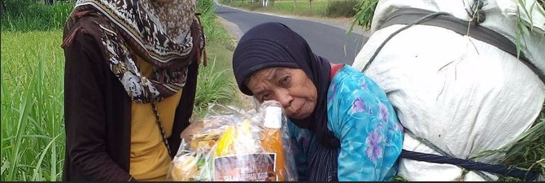
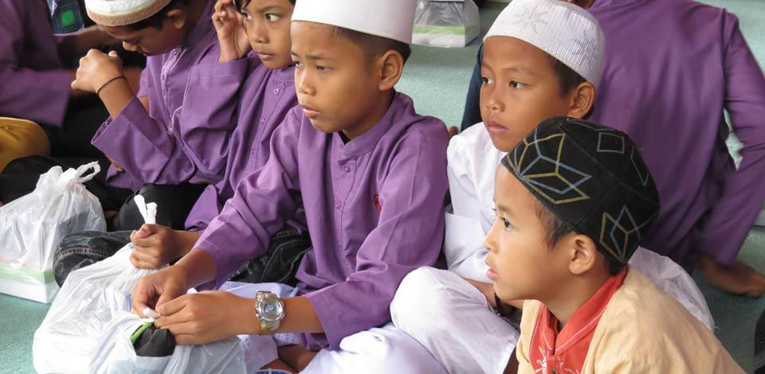
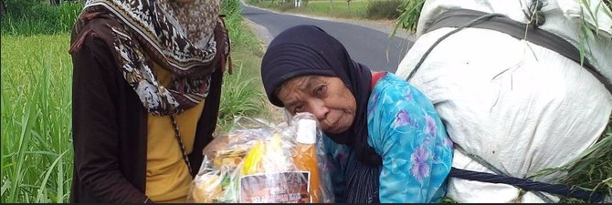
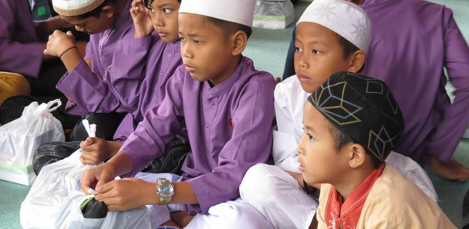
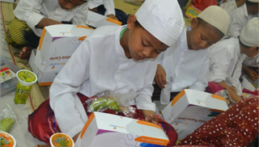

Program Bantuan Wirausaha
Program pemberdayaan ekonomi berbasis usaha kecil dan mikro binaan Peduli dhuafa, dalam bentuk pengadaan modal dan/atau infrastruktur. more...Cinta Dhuafa Melintas Batas
Ibu Samirah hanyalah potret sebagian keluarga dhuafa di negeri tercinta ini, tentunya masih banyak lagi keluarga dhuafa yang harus kita bantu sebagai wujud cinta kita kepada sesama muslim. more...Nasi Kotak untuk Kaum Duafa
Jumat Sedekah, Peduli dhuafa terus bergerak untuk membagikan rezeki berupa nasi kotak kepada warga miskin dan kaum duafa, rutin setiap minggu. more...
